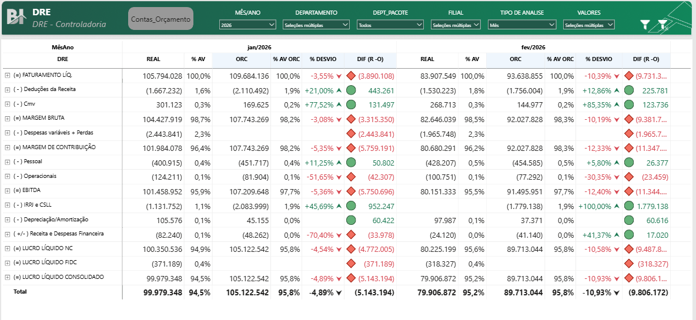
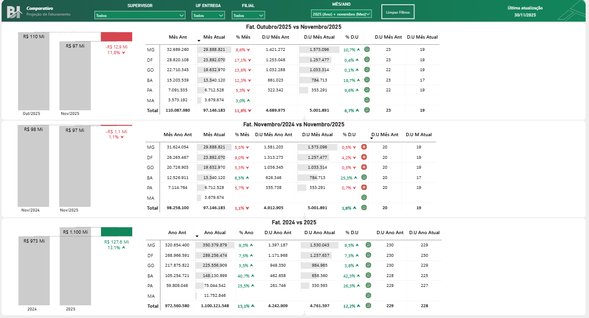
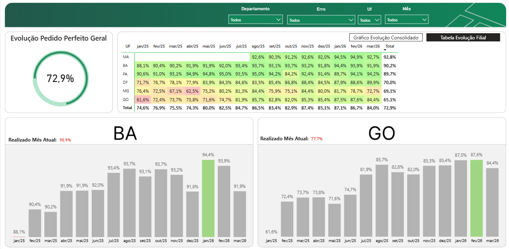

01

DRE (Demonstrativo de Resultado)
Acompanhamento do resultado financeiro por período, com receitas, custos e despesas.
Crio dashboards e análises financeiras com Power BI e Excel. Também desenvolvo interfaces web com HTML, CSS e JavaScript.
const analista = {
nome: "Weberton",
area: "Dados",
ferramentas: ["Power BI", "Excel",
"HTML", "CSS", "JS"],
foco: "Gerar insights"
};Há três anos conheci o poder de gerar insights a partir dos dados. Desde então sigo buscando ser referência na área. Atuo com controladoria, indicadores financeiros, projeções e dashboards que ajudam gestores a acompanhar resultados.
Também estudo Análise e Desenvolvimento de Sistemas, o que me permite criar as minhas próprias interfaces para os dados.
Converse comigo
Acompanhamento do resultado financeiro por período, com receitas, custos e despesas.

Projeção do faturamento com base no histórico, comparando o realizado com o previsto.

Acompanhamento da qualidade dos pedidos e dos pontos de falha do processo.
Estou aberto a conversar sobre oportunidades, projetos e troca de ideias sobre análise de dados.
O painel foi construído a partir de um datalake com consultas em SQL e tratamento de dados no Power Query. O orçamento é integrado a partir de uma tabela de referência em Excel, permitindo comparar o realizado com o planejado.
O painel permite analisar a performance em diferentes recortes de tempo (mês, trimestre, semestre e ano) e, principalmente, por centro de custo (áreas da empresa) e por filial. A base considera os lançamentos gerenciais e os critérios de rateio, incluindo critérios móveis e regras aplicadas diretamente no datalake, o que dá ao gestor uma visão consistente dos custos de cada área.
Ferramentas:
SQL, Python, Power BI, Power Query, DAX, Excel.
Painel foi construído sobre o histórico de vendas por praça (região de venda) e a sazonalidade identificada nos dados. A partir desse histórico, apliquei uma curva de crescimento para projetar o faturamento e avaliar a aderência à meta definida no planejamento estratégico. Os dados foram extraídos de um datalake com consultas em SQL.
O painel permite acompanhar o atingimento da meta com filtro de período interativo e comparar o desempenho atual com o histórico. Também disponibilizei um calendário de faturamento para os vendedores, com metas anuais, mensais e diárias, para que cada um acompanhe o próprio resultado.
Ferramentas:
SQL, Power BI, Power Query, DAX, HTML, CSS, Excel.
Painel mede a eficiência da operação desde o pedido até a entrega. A partir do mapeamento do processo, defini os indicadores que compõem a reformulação do macro indicador e estabeleci as regras de cálculo. As bases foram unificadas em um datalake e o modelo foi publicado no Power BI com segurança em nível de linha (RLS), para que cada gerente de filial visualize apenas os dados da sua operação.
Após a implementação, o indicador teve um ganho de 3 pontos percentuais no primeiro mês e de 5 pontos percentuais após o terceiro mês. Além da melhora nos resultados, o painel aumentou o engajamento das equipes com o indicador e apoiou o processo de premiação dos melhores colaboradores, bem como o acompanhamento dos casos que precisavam de atenção.
Ferramentas:
SQL, Power BI, Power Query, DAX, HTML, CSS, Microsoft Fabric.